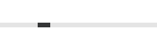

ProgressBar QML Type
Indicates the progress of an operation. More...
| Import Statement: | import QtQuick.Controls |
| Inherits: |
Properties
- from : real
- indeterminate : bool
- position : real
- to : real
- value : real
- visualPosition : real
Detailed Description

ProgressBar indicates the progress of an operation. The value should be updated regularly. The range is defined by from and to, which both can contain any value.
ProgressBar { value: 0.5 }
ProgressBar also supports a special indeterminate mode, which is useful, for example, when unable to determine the size of the item being downloaded, or if the download progress gets interrupted due to a network disconnection.

ProgressBar { indeterminate: true }
The indeterminate mode is similar to a BusyIndicator. Both can be used to indicate background activity. The main difference is visual, and that ProgressBar can also present a concrete amount of progress (when it can be determined). Due to the visual difference, indeterminate progress bars and busy indicators fit different places in user interfaces. Typical places for an indeterminate progress bar:
- at the bottom of a ToolBar
- inline within the content of a Page
- in an ItemDelegate to show the progress of a particular item
See also Customizing ProgressBar, BusyIndicator, and Indicator Controls.
Property Documentation
from : real |
indeterminate : bool |
This property holds whether the progress bar is in indeterminate mode. A progress bar in indeterminate mode displays that an operation is in progress, but it doesn't show how much progress has been made.
position : real |
This property holds the logical position of the progress.
The position is expressed as a fraction of the value, in the range 0.0 - 1.0. For visualizing the progress, the right-to-left aware visualPosition should be used instead.
See also value and visualPosition.
to : real |
value : real |
visualPosition : real |
This property holds the visual position of the progress.
The position is expressed as a fraction of the value, in the range 0.0 - 1.0. When the control is mirrored, visuaPosition is equal to 1.0 - position. This makes visualPosition suitable for visualizing the progress, taking right-to-left support into account.